CS61B 第 4 讲：引用、递归与列表（References, Recursion, and Lists）
本电子书信息 - 来源视频：【数据结构与算法 CS61B 2021】伯克利大学—中英字幕 p04 p3 4_References, Recursion, and Lists - 课程讲义：Hug61B · 2.1 Mystery of the Walrus - 讲义版权：本课程全部材料由 Josh Hug（UC Berkeley CS61B）以 Creative Commons 4.0 BY-NC-SA 许可发布——可自由分享、演绎，但须署名 Josh Hug、以相同许可共享，且不得商用。 - 本书由课堂录像字幕重构而成，术语以官方讲义为准；文中"盒子与指针"示意图为官方讲义原图，演示过程图截取自视频。
本讲围绕一个看似简单的问题展开：为什么修改引用类型的对象会"牵一发而动全身"，而基本类型却互不影响？ 沿着这条线索，Josh Hug 逐步引出内存模型、等号的黄金法则、引用类型、按值传递，并最终带领我们用递归与迭代从零实现一个链表 IntList。
一、开场：海象之谜（The Mystery of the Walrus）
本讲从一个谜题开始。它对理解"如何构建一个列表"至关重要——先不要急着往下看答案，试着凭直觉判断。
谜题一：海象
Walrus a = new Walrus(1000, 8.3);
Walrus b;
b = a;
b.weight = 5;
System.out.println(a);
System.out.println(b);
问题：把 b 赋值为 a 之后，修改 b.weight，会不会影响 a？
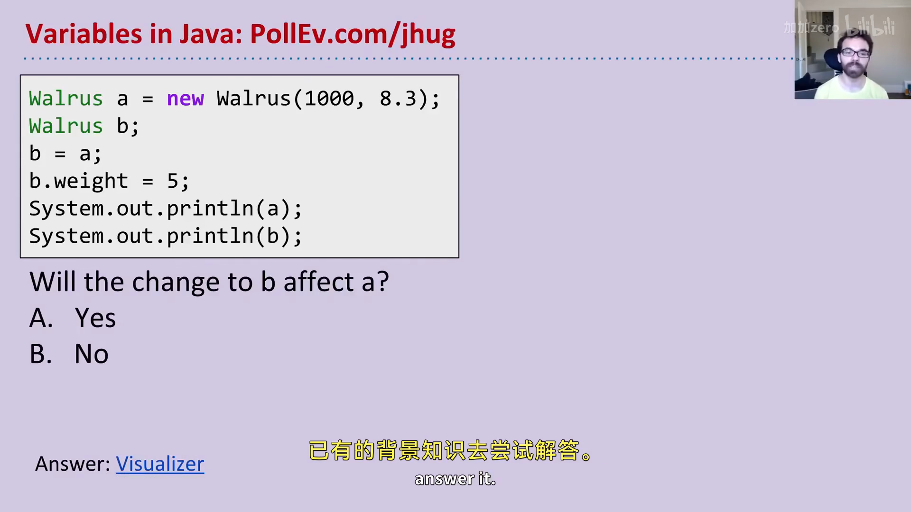
📷 海象之谜的代码
回到原视频 (00:00:24)
谜题二：整数
int x = 5;
int y;
y = x;
x = 2;
System.out.println("x is: " + x);
System.out.println("y is: " + y);
问题：修改 x，会不会影响 y？
答案
- 海象之谜：答案是会。修改
b.weight会同时改变a与b——尽管a最初被设置为 1000。 - 整数之谜：答案是不会。
x = 2之后，y仍然是 5。
在可视化器里运行第一段代码可以直观看到：创建海象 a 之后，当执行 b = a，画面上出现两个箭头指向同一只海象。于是 b.weight 改变的是那唯一一只海象，打印出来两者自然相同。而整数的情况则不同：x 和 y 是两个完全不同的盒子，x = 2 只改写 x 所在的盒子，y 的盒子纹丝不动。
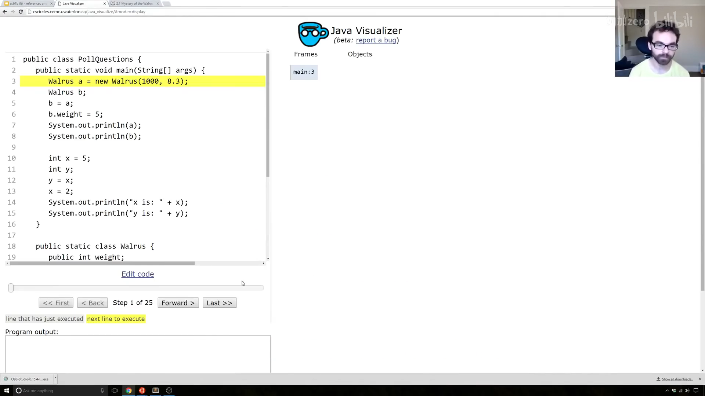
📷 可视化器显示两个箭头指向同一只海象
回到原视频 (00:02:07)
这就是 Josh Hug 所称的海象之谜。要真正理解"为什么海象和整数的行为不同"，必须先了解计算机如何存储信息。
二、内存与比特（Bits）
电脑里存储的任何信息——无论是原子的排列，还是某种神秘晶体——最终都以一串 0 和 1 编码。例如：
| 信息 | 典型编码 |
|---|---|
数字 72 |
01001000 |
数字 205.75 |
01000011 01001101 11000000 00000000 |
字母 H |
01001000（与 72 相同！） |
布尔值 true |
00000001 |
本课程不会深究具体二进制表示（那是后续课程 CS61C 的内容），但值得注意一个耐人寻味的事实：72 和字母 H 存储的都是 01001000。那么一段 Java 代码如何知道该把这串比特解读成数字还是字母？
答案是类型（type）。看这段代码：
char c = 'H';
int x = c;
System.out.println(c); // H
System.out.println(x); // 72
c 和 x 里存着几乎相同的比特，但 Java 解释器根据变量的类型对它们做不同解读：char 类型把它当作字母 H，int 类型把它当作数字 72。
Java 共有 8 个基本类型（primitive types）：byte、short、int、long、float、double、boolean、char。其中 short 和 float 在本课程中基本用不到，其余几种会随着课程推进逐个讨论。
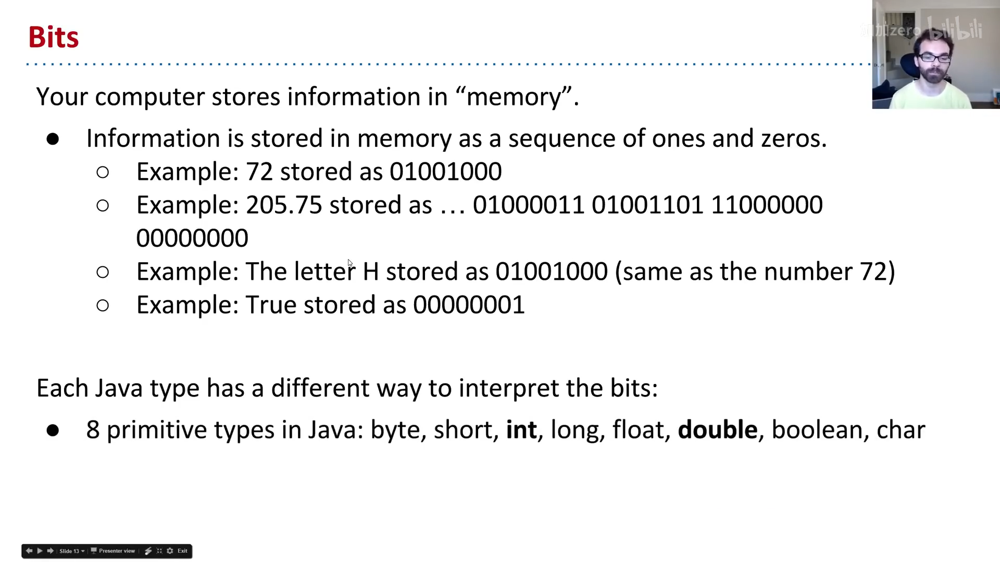
📷 Java 的八个基本类型
回到原视频 (00:05:24)
三、变量声明与盒子记法
声明变量 = 分配一个"盒子"
可以把电脑想象成拥有海量内存比特，每个比特都有唯一地址。当你声明一个特定类型的变量时，Java 会找一块恰好够放该类型的连续比特。例如：
- 声明
int，得到 32 比特； - 声明
double，得到 64 比特。
为方便叙述，我们把这样一块内存称作一个"盒子"（box）。同时，Java 解释器会在内部维护一张表，把变量名映射到盒子的第一个比特的地址。执行下面两行：
int x;
double y;
就得到两个盒子（32 位与 64 位）：
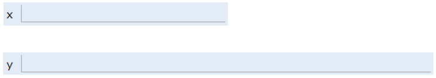
一个重要特性：Java 不会告诉你盒子的确切位置（你无法得知 x 在 352 号比特）。这是与 C 这类语言的关键区别——C 允许你直接索取某块数据的精确地址。Java 隐藏内存地址是一种权衡：少了控制权，也因此避开了大量极易出错的坑。正如 Donald Knuth 的名言："过早的优化是万恶之源。"（顺带一个贴切的类比：你无法直接控制自己的心跳——这限制了你对某些场景的优化，但也避免了"不小心把心跳关掉"这种蠢事。）
另一个细节：声明变量时，Java 不会往盒子里写入任何默认值。因此在你用 = 给盒子填上比特之前，编译器不允许使用该变量（打印 x 或 y 会报错）。
而一旦赋值：
x = -1431195969;
y = 567213.112;
盒子就被填入对应数字的比特：
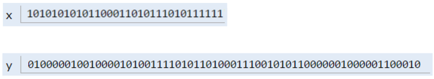
简化盒子记法
直接用二进制写盒子内容虽然精确，却极难读。于是本课程引入简化盒子记法（simplified box notation）：盒子内容改用人类可读的符号写出，而不是二进制。上述赋值后，环境可表示为：
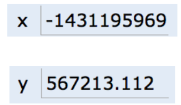
这套记法与课程所用的 Java 可视化器保持一致，将在全课程中反复使用。
四、等号的黄金法则（GRoE）
有了简化盒子记法，海象之谜终于可以被解开。谜底浓缩成一句话——等号的黄金法则（Golden Rule of Equals, GRoE）：
当你写
y = x时，你是在告诉 Java 解释器：把x盒子里的比特原样复制到y盒子里。
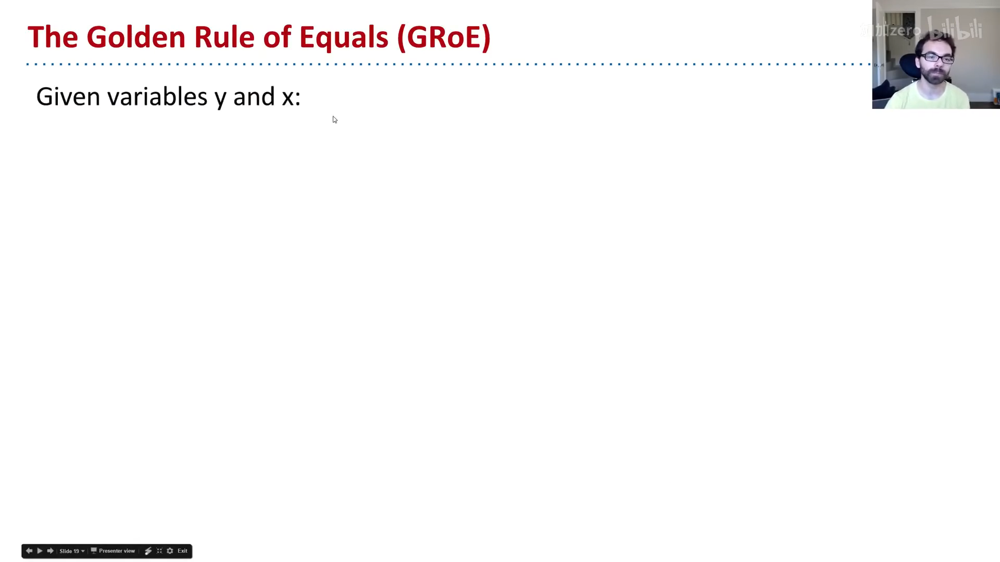
📷 等号的黄金法则
回到原视频 (00:09:42)
回到整数之谜：
int x = 5;
int y;
y = x; // 把 x 盒子里的比特（数字 5）复制到 y 盒子
x = 2; // 把 x 盒子的内容改成数字 2，y 盒子不变
int x = 5：得到一个装数字 5 的盒子；int y：得到另一个（暂未画内容的）盒子；y = x：把x里的比特复制进y；x = 2：GRoE 说的是"把这个盒子填成 2"——只改x盒子，y不受影响。
这就是整数之谜的答案：x 和 y 是两个独立盒子，赋值只是复制比特，并不建立任何"联动"。
这条法则对 Java 里任何 = 赋值都成立，它也是后面理解一切引用行为、乃至所有数据结构效率的根基。
五、引用类型（Reference Types）
前面提到 8 个基本类型。除此之外的一切——包括数组——都不是基本类型，而是引用类型（reference type），如 Planet、Walrus、Dog。
对象实例化：new 做了什么
当我们用 new 实例化一个对象（如 new Walrus(1000, 8.3)）时，Java 会为类的每个实例变量分配盒子并填默认值，随后构造函数（通常）再把这些盒子填成其他值。以海象类为例：
public static class Walrus {
public int weight;
public double tuskSize;
public Walrus(int w, double ts) {
weight = w;
tuskSize = ts;
}
}
执行 new Walrus(1000, 8.3) 会得到一个由两个盒子（32 位 + 64 位，共 96 位）组成的海象：上面的盒子装重量 1000，下面的盒子装獠牙大小 8.3。
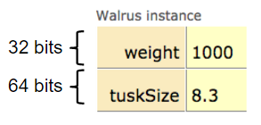
编者说明：真实 Java 实现里，对象还有额外的元数据开销（所以一只海象不止 96 位），这里忽略不计，不影响本课程的理解。
new 关键字最有趣的地方在于它的返回值。类比：你到田里埋下宝藏，光埋没用，还必须报告宝藏埋在哪里，否则再也没人能找回它。new 正是这样——它在内存里为海象找到家之后，会喊出这段内存的地址（一串比特），作为返回值。
引用变量的声明：64 位的"地址盒子"
声明任意引用类型变量（海象、狗、行星、数组……），Java 分配的盒子一律是 64 位，与对象类型无关。这乍看荒谬：一只海象要 96 位，怎么一个变量只有 64 位？
谜底在于：这 64 位的盒子里装的不是海象的数据，而是海象在内存中的地址。 例如：
Walrus someWalrus;
someWalrus = new Walrus(1000, 8.3);
第一行创建 64 位盒子；第二行由 new 返回地址，按 GRoE 复制进 someWalrus 盒子。假设海象的 weight 从比特 5051956592385990207 开始存放，那么 someWalrus 盒子里存的就是这个 64 位地址：
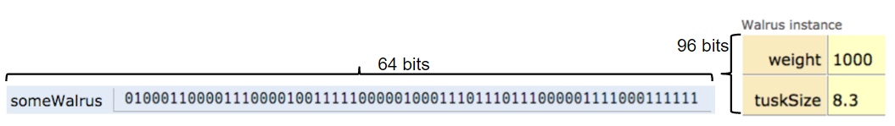
引用变量也可以赋特殊值 null，即全零：
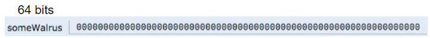
盒子与指针表示法
和之前一样，直接看一串 64 位地址毫无教育意义，于是我们引入盒子与指针表示法（box and pointer notation）：
- 地址为全零 → 写
null； - 非零地址 → 画一个箭头，指向它所指的对象实例。
上面两例分别表示为：
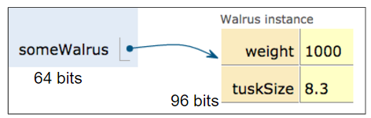
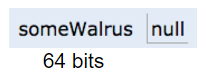
小结：本课程后续画图时，每个变量都是一个带标签的小盒子；基本类型的值直接写在盒子里（如
5、3.0），引用类型则画箭头指向对象。这套记法是理解所有数据结构的关键。
六、解开海象之谜
现在终于可以完整、彻底地解开海象之谜。核心代码：
Walrus a = new Walrus(1000, 8.3);
Walrus b;
b = a;
第一步，a = new Walrus(1000, 8.3)：new 找到 96 位内存存放海象并喊出地址，a 盒子记录这个地址（画成箭头）：
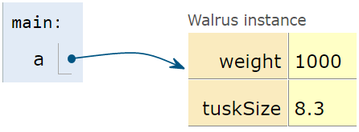
第二步，Walrus b：创建一个 64 位盒子。此时 b 未被定义——既不是 null，也不是任何值，只是"什么都没有"：
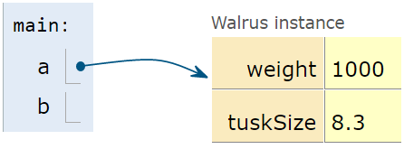
第三步，b = a：按 GRoE，把 a 盒子里的 64 位比特原样复制到 b 盒子。用视觉隐喻说，就是把 a 里的箭头复制一份给 b：
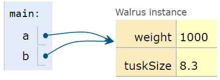
仅此而已，没有任何更复杂的魔法。于是 b.weight 会"跟着箭头走"，找到与 a 相同的海象——这就是海象之谜的完整答案。
七、参数传递：按值传递
GRoE 不仅适用于赋值，同样适用于函数传参——当你把参数传给函数时，本质仍然是复制比特。复制比特这件事通常被称为按值传递（pass by value），而 Java 永远按值传递。
以平均值为例：
public static double average(double a, double b) {
return (a + b) / 2;
}
public static void main(String[] args) {
double x = 5.5;
double y = 10.5;
double avg = average(x, y);
}
main 执行前两行后，得到两个盒子 x = 5.5、y = 10.5：
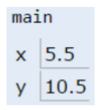
调用 average(x, y) 时，average 函数拥有自己的作用域，里面有全新的 a、b 两个盒子，x、y 的比特被复制进去：
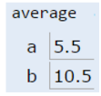
如果 average 里修改 a，main 里的 x 完全不变——因为 GRoE 说，你只是在给 a 这个盒子填入新比特。没有任何反向箭头指回 main。
练习：doStuff
public class PassByValueFigure {
public static void main(String[] args) {
Walrus walrus = new Walrus(3500, 10.5);
int x = 9;
doStuff(walrus, x);
System.out.println(walrus); // ?
System.out.println(x); // ?
}
public static void doStuff(Walrus W, int x) {
W.weight = W.weight - 100;
x = x - 5;
}
}
调用 doStuff 后，walrus 和 x 分别是什么？——只需 GRoE 一条规则即可求解。
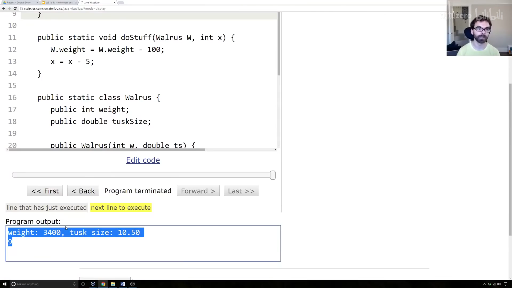
📷 doStuff 按值传递的可视化
回到原视频 (00:23:43)
解答思路：doStuff 有自己的作用域，参数 W 和 x 是复制来的比特。W 盒子里复制的是海象的地址，所以 W 与 walrus 两个箭头指向同一只海象——W.weight -= 100 会把那只海象减重 100，main 里的 walrus 自然"变轻了"。而 x 盒子里复制的是数字 9 本身（不是 9 的地址），x = x - 5 只改 doStuff 里这个局部 x，不会回流到 main。所以最终：walrus.weight == 3400，而 main 里的 x 仍是 9。
这里有一个极其微妙但重要的区别：引用参数复制的是"地址"，基本类型参数复制的是"值本身"。
八、数组也是引用类型
数组同样是对象，和行星、海象、狗一样，通常用 new 实例化。把数组的声明、实例化、赋值拆开看：
int[] a; // 声明：64 位盒子，只能存数组地址
a = new int[]{0, 1, 2, 95, 4}; // 实例化 + 赋值
- 声明
int[] a创建一个 64 位盒子，且编译器只允许往里面存数组地址，目前还没有实际对象； - 实例化
new int[]{...}创建 5 个各 32 位的盒子，分别放入0、1、2、95、4，new返回这个数组对象的地址； - 若地址无人接收（"落在聋子的耳朵上"），对象创建后立刻不可用——所以我们通常三步合一完成赋值。
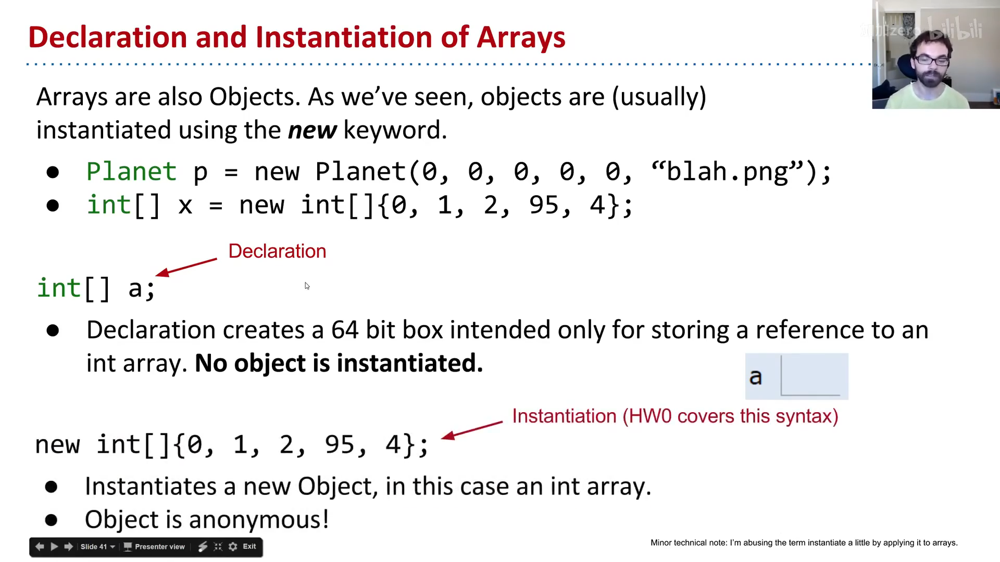
📷 数组的实例化
回到原视频 (00:26:44)
对象可以被"丢失"：如果某个对象的地址只存在 a 一个盒子里，那么 a = new int[]{...} 或 a = null 之后，就再也没有任何地方保存那个旧对象的地址，它将永远无法被访问。这不是坏事——很快我们构建列表时，会主动希望丢弃对旧对象的引用，由垃圾回收器回收。
九、IntList：从零构建链表
至此，我们终于可以动手构建一个列表。列表与数组的核心区别是：列表可以任意增长，而 Java 数组大小固定。
我们的列表类 IntList 只含两个成员：
public class IntList {
public int first; // 一个整数
public IntList rest; // 指向另一个列表的地址（指针）
public IntList(int f, IntList r) {
first = f;
rest = r;
}
}
first：本节点存的整数；rest：指向"剩余列表"的指针。若rest == null，说明这是最后一个节点。
用盒子与指针表示，一个 5 → 10 → 15 的链表长这样：
graph LR
L["L (IntList)"] --> N1["first = 5"]
N1 -- rest --> N2["first = 10"]
N2 -- rest --> N3["first = 15<br/>rest = null"]
正向构建（啰嗦但直观）
IntList L = new IntList(5, null);
L.rest = new IntList(10, null);
L.rest.rest = new IntList(15, null);
逐步可视化可以看到：先有 first=5, rest=null 的列表 L；然后 L.rest 成为 first=10, rest=null 的新节点；最后 L.rest.rest 成为 first=15, rest=null 的节点。
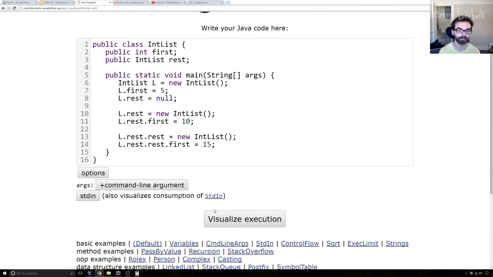
📷 IntList 正向构建过程
回到原视频 (00:30:36)
反向构建（更简洁）
先加构造函数 IntList(int f, IntList r)，再从尾部往前搭：
IntList L = new IntList(15, null);
L = new IntList(10, L);
L = new IntList(5, L);
每一步都"新建一个节点，把旧列表挂到它的 rest 上"，最终得到 5 → 10 → 15。
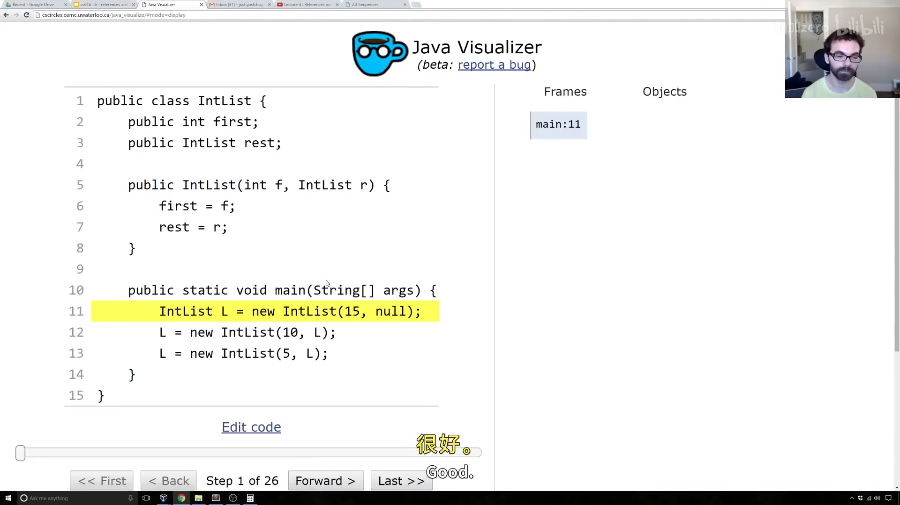
📷 反向构建列表
回到原视频 (00:32:50)
到这里，IntList 在技术上已经能做列表所需的一切操作，但用起来相当别扭——比如取第 i 个元素、询问列表大小都让人抓狂。于是接下来为它添加辅助方法。
十、size 与 iterativeSize
我们要加一个 size() 方法：调用 L.size() 返回列表元素个数（类似 Python 的 len）。
递归版 size
递归方法必须有一个基本情况（base case）。这里最自然的基况是 rest == null——此时列表只有一个元素，返回 1：
/** 用递归返回列表大小 */
public int size() {
if (rest == null) {
return 1;
}
return 1 + this.rest.size();
}
- 若
rest == null，返回1； - 否则，本节点贡献
1，再加上"剩余列表的大小"。
常见疑问：为什么不写
if (this == null) return 0;？因为size()是在某个对象上被调用的（如L.size()）——若L本身是null，这一步就会抛空指针异常，根本到不了方法体。
在可视化器里逐步跟踪递归调用：L 先问自己的 rest 是否为 null——不是，于是"问朋友"rest 的大小再加一；一路问到最后一个节点，它回答"我的 rest 是 null，大小是 1"；返回值逐层回传 1 → 2 → 3。
graph TD
A["L.size()"] --> B{"rest == null ?"}
B -- 否 --> C["1 + L.rest.size()"]
C --> D{"rest == null ?"}
D -- 否 --> E["1 + L.rest.rest.size()"]
E --> F{"rest == null ?"}
F -- 是 --> G["返回 1"]
G --> H["返回 1 + 1 = 2"]
H --> I["返回 1 + 2 = 3"]
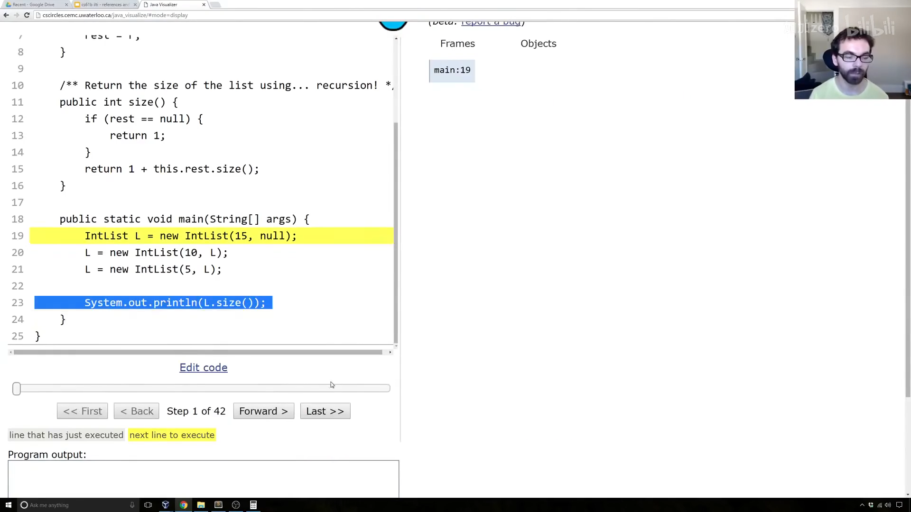
📷 递归 size 的可视化
回到原视频 (00:37:27)
迭代版 iterativeSize
为了展示另一种模式，再写一个不用递归的版本。常见套路是引入一个指针变量 p，从 this 出发逐步前进：
/** 用迭代（无递归）返回列表大小 */
public int iterativeSize() {
IntList p = this;
int totalSize = 0;
while (p != null) {
totalSize += 1;
p = p.rest;
}
return totalSize;
}
p 这个名字提醒自己：它持有一个指针。之所以需要 p，是因为 Java 里不能给 this 重新赋值。循环每走一步计数加一、p 前进到下一个节点，直到 p == null。
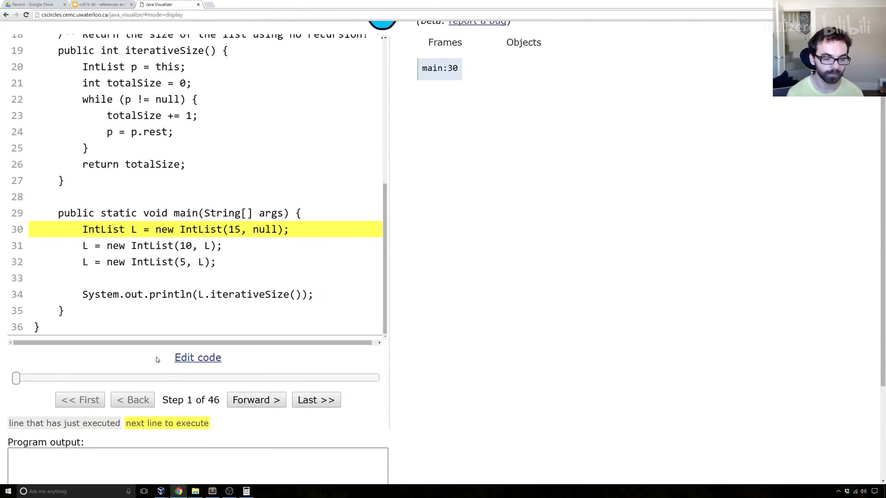
📷 迭代 iterativeSize 的可视化
回到原视频 (00:40:14)
编者说明：
iterativeSize里的while循环可以用if改写为递归，两者本质等价；视频中讲师采用的正是上述"指针前移"写法。
十一、get 方法
最后，添加 get(int i) 返回列表第 i 个元素（约定最前面的是第 0 项）。为了简单，假设调用者请求的索引确实存在（越界时崩溃也无妨）。
对 5 → 10 → 15：L.get(0) 返回 5，L.get(1) 返回 10，L.get(2) 返回 15。
用递归实现，基况是 i == 0——直接返回 first；否则把问题"甩"给 rest，询问它的第 i - 1 项：
/** 返回列表第 i 项（最前为第 0 项） */
public int get(int i) {
if (i == 0) {
return first;
}
return rest.get(i - 1);
}
思路是：我的第 i 项，就是我邻居（rest）的第 i - 1 项。 例如 L.get(1) 等于 L.rest.get(0)，而 rest.get(0) 直接返回 10。测试：get(0) 得 5、get(1) 得 10、get(2) 得 15，越界请求则崩溃——符合预期。
注意，这样写出来的 get 是线性时间：若列表有 100 万个元素，取最后一项比短列表慢得多。后续课程会介绍能避免这个问题的列表实现（如 SLList、AList）。
附：官方参考与延伸阅读
- 本讲讲义（Mystery of the Walrus）：https://joshhug.gitbooks.io/hug61b/content/chap2/chap21.html
- Java 可视化器（本讲演示全程使用的工具）：http://cscircles.cemc.uwaterloo.ca/java_visualize/
- 整数表示（二进制补码）：https://en.wikipedia.org/wiki/Two%27s_complement
- 浮点表示（IEEE 754）：https://en.wikipedia.org/wiki/IEEE_floating_point
- "过早优化是万恶之源"（Knuth）：http://www.informit.com/articles/article.aspx?p=2246428&seqNum=5
- 内存隐藏避免的编程错误：http://www.informit.com/articles/article.aspx?p=2246428&seqNum=1
- The Law of the Broken Futon（关于"半懂不懂"的代价）：https://mathwithbaddrawings.com/2015/04/08/the-math-ceiling-wheres-your-cognitive-breaking-point/
- 为什么不能在 Java 里重新给 this 赋值：https://stackoverflow.com/questions/23021377/reassign-this-in-java-class
- 本讲后续练习（未评分，
incrList/dinkList）：见课程 lectureCode 仓库的lists练习目录。
版权与许可：本电子书中的课堂讲解内容重构自 Josh Hug（UC Berkeley）CS61B 课程录像；课程全部材料依据 Creative Commons 4.0 BY-NC-SA 许可发布。请在使用时署名 Josh Hug、以相同许可共享，且不得用于商业用途。书中的示意图（盒子与指针图）来自官方讲义原图，演示过程截图来自原视频，相应权利归原作者与视频权利人所有。